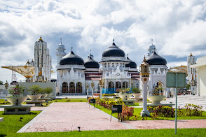
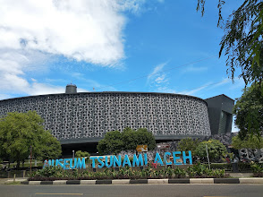
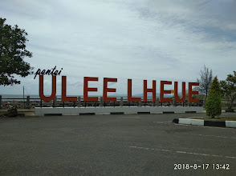
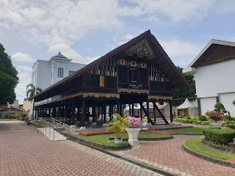
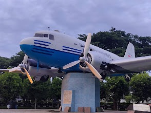
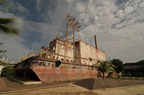
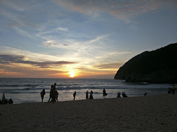
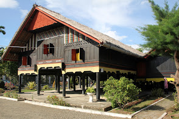
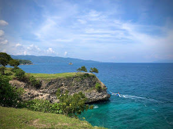
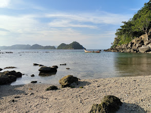

1. Masjid Raya Baiturrahman
Salah satu landmark terkenal di Banda Aceh adalah Masjid Raya Baiturrahman. Masjid ini menjadi simbol kekuatan dan ketahanan masyarakat Aceh. Anda dapat mengunjungi masjid ini untuk menikmati keindahan arsitektur yang megah dan bersejarah.

2. Museum Tsunami Aceh
Museum Tsunami Aceh merupakan tempat yang sangat bersejarah. Museum ini memamerkan koleksi yang menggambarkan kehancuran dan pemulihan pasca-tsunami yang terjadi pada tahun 2004. Anda dapat melihat berbagai artefak dan foto-foto yang menggugah perasaan.

3. Pantai Ulee Lheue
Pantai Ulee Lheue adalah pantai yang tenang dan indah di Banda Aceh. Pantai ini sering dikunjungi oleh para pengunjung yang ingin bersantai dan menikmati keindahan alam. Lokasi ini menjadi tempat favorit nongkrong kawula muda saat sore hari.

4. Museum Aceh
Museum Aceh adalah museum yang terletak di kompleks Keraton Aceh. Museum ini memiliki koleksi yang beragam, termasuk artefak sejarah, dan seni tradisional. Anda dapat mengetahui lebih banyak tentang sejarah dan budaya Aceh di museum ini.

5. Lapangan Blang Padang
Lapangan ini merupakan salah satu tempat berkumpul dan berolahraga bagi warga Banda Aceh. Lapangan Blang Padang telah menjadi tempat rekreasi keluarga dan sarana olahraga. Di tempat ini, saat ini dibangun Monumen Aceh Thanks to the World yang bertuliskan ucapan terima kasih dalam berbagai bahasa di dunia.

6. Kapal PLTD Apung
Dulu merupakan kapal pembangkit listrik yang terdampar di tengah permukiman akibat tsunami. Kini, PLTD Apung telah diubah menjadi sebuah objek wisata yang menarik dikunjungi.Lokasi Kapal PLTD Apung di Punge Blang Cut, Kec. Jaya Baru, Kota Banda Aceh.

7. Pantai Lampuuk
Pantai Lampuuk terletak di Kecamatan Lhoknga, Aceh Besar. Kawasan wisata ini merupakan salah satu wisata alam yang terkenal di Aceh. Maka tak heran, pantai ini selalu ramai dikunjungi wisatawan, baik wisatawan lokal maupun mancanegara. Pengunjung tidak hanya datang di hari libur melainkan juga di hari kerja, mereka ingin menikmati pesona alam di pantai ini.

8. Rumah Cut Nyak Dien
Rumah Cut Nyak Dien adalah rumah panggung pemberian Belanda kepada Teuku Umar yang berlokasi di Desa Lampisang kecamatan Peukan Bada Kabupaten Aceh Besar. Bangunan rumah berukuran 25 x 17 meter.[1]Rumah yang terletak di Desa Lampisang merupakan replika dari bangunan asli yang dibakar Belanda pada 1896 [2] dan kembali dibangun pada 1987.

9. Bukit Lamreh
Berlokasi di Desa Lamreh, Kecamatan Mesjid Raya, Aceh Besar, Bukit Lamreh memiliki kontur tanah yang cenderung landai. Bukit ini terbentuk dari batuan karst yang membukit dengan ujung yang menjorok ke laut. Ujung bukit yang dikenal sebagai Ujung Kelindu itu langsung berhadapan dengan lautan lepas yang jernih membiru.

10. Lhouk Mata Ie
Lhok mata ie termasuk wisata bahari yang terletak di desa Ujung Pancu, kecamatan Peukan Bada, kabupaten Aceh Besar. Jarak tempuh perjalanan menuju desa Ujung Pancu butuh waktu sekitar 25 menit dari pusat kota Banda Aceh.

.png)